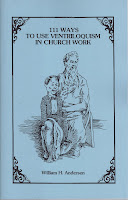

Just One of One Hundred Eleven
3/8/2009
{kind=link}

#78 The dummy can be the game leader.
In young people's groups the children will often sit ans listen better if you give them an active game to play first. They expend some energy and then will sit quietly and listen while the energy rebuilds. Try playing a game of Simon Says. Let the dummy give the commands. The children will like the change.
Taken from William Andersen's 111 Ways to Use Ventriloquism In Church Work. Added to his own experience, were ideas observed, read about, and even dreamed up - 111 ways to use the art of ventriloquism to teach in a fun and entertaining manner. Use this treasure trove of ideas to expand your own service in church and children’s ministries.
Just one of more than two dozen books I have listed now for eBay auctions ending tomorrow (Monday) morning. See them all Here.
Taken from William Andersen's 111 Ways to Use Ventriloquism In Church Work. Added to his own experience, were ideas observed, read about, and even dreamed up - 111 ways to use the art of ventriloquism to teach in a fun and entertaining manner. Use this treasure trove of ideas to expand your own service in church and children’s ministries.
Just one of more than two dozen books I have listed now for eBay auctions ending tomorrow (Monday) morning. See them all Here.